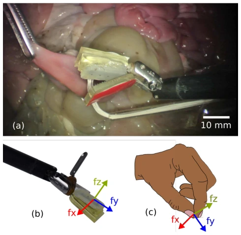
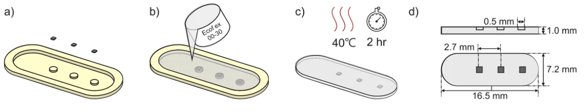
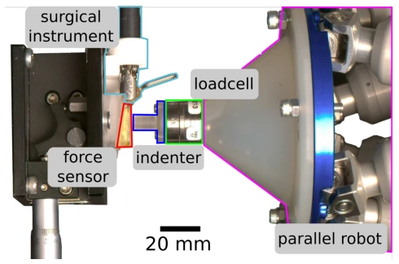
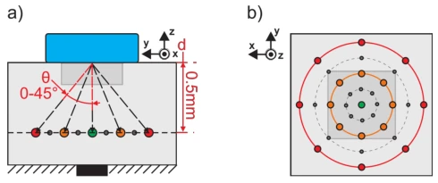
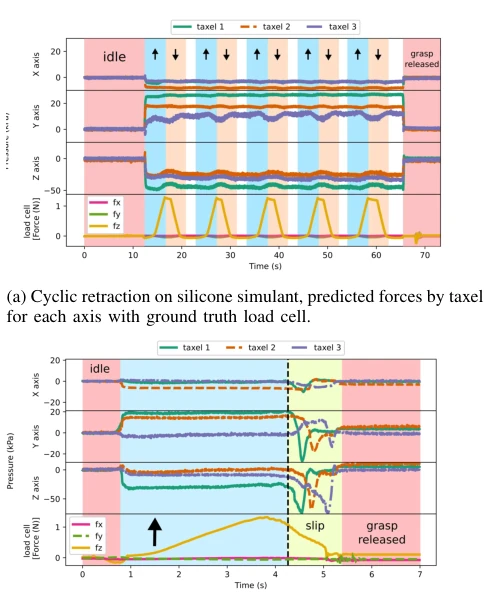
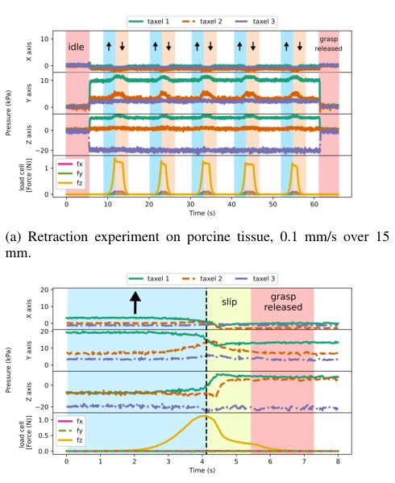
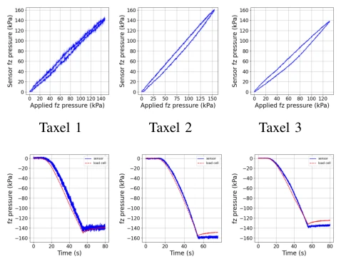

Hall Effect-Based Tactile Force Detection Sensor for Robot-Assisted Minimally Invasive Surgery
Charles DeLorey, Michael Brockdorff, Adam Metcalf, Benjamin Calmé, Pietro Valdastri, Dominic Jones abspdf
论文点评Review
这篇论文本质上是个硬件传感器设计，披着“具身智能”的外衣。虽然解决了 RAMIS 中触觉缺失的痛点，但所谓的“智能”仅限于用神经网络做校准，而非真正的感知决策。亮点在于毫米级 Hall 效应传感器的集成，能检测剪切力，这对防打滑很有用。槽点在于：它只是把传感器贴在了夹爪上，并没有改变手术机器人的控制架构；而且硅胶和猪肠子的实验虽然证明了可行性，但离临床 sterilization 和生物相容性还有距离。别指望它能直接生成抓取策略，它只是个“眼睛”没装“大脑”的传感器，属于典型的“感知先行”研究，而非端到端控制。
This paper is essentially a hardware sensor design, wearing the guise of "embodied intelligence". Although it solves the pain point of tactile loss in RAMIS, the so-called "intelligence" is limited to using neural networks for calibration, rather than true perception decision-making. The highlight lies in the integration of millimeter-scale Hall effect sensors, capable of detecting shear force, which is very useful for anti-slip. The drawback is: it just pasted the sensor onto the gripper, without changing the surgical robot's control architecture; moreover, although experiments with silicone and pig intestines proved feasibility, there is still a gap from clinical sterilization and biocompatibility. Do not expect it to directly generate grasp strategies; it is just a sensor with "eyes" but no "brain", belonging to typical "perception-first" research, rather than end-to-end control.
RAMIS separates the doctor from the tool, losing tactile feedback [1]. Existing systems like da Vinci 5 only provide overall force feedback, lacking local pressure information at the contact surface [4]. Traditional schemes have respective flaws: piezoresistive MEMS prone to drift [7], capacitive afraid of liquid [8], optical waveguide integration complex [10]. It is necessary to perceive local contact mechanics directly on the gripper contact surface, especially shear force and friction behavior, to prevent tissue damage or slippage. Existing research mostly focuses on macro forces, making it difficult to capture local pressure distribution at the tissue contact surface, leading to ineffective slip prediction.

Fig. 1: Force sensor in (a) freeform tissue grasping, (b) the assembled sensor on instrument and (c) analogous bioinspired fingertip pinch inspiration.
The overall process is: sensor hardware design -> 6-DoF robot calibration -> neural network regression modeling -> preclinical validation. The core innovation is an array of 3 mm-scale taxels, utilizing Hall effect to detect magnet displacement in the elastomer. Each taxel uses a pair of Hall sensors, the proximal sensor is used to compensate for stray magnetic fields. During the calibration stage, the 6-DoF robot applies forces at different angles, collects magnetic field data, and trains a feedforward neural network via PyTorch to map magnetic fields to force/pressure. The elastomer layer thickness design balances sensitivity and size. The sensor connects to the microcontroller via PCB, sampling rate 500Hz. Specifically, the magnet is embedded in Ecoflex 00-30, 0.7mm from the sensor. Calibration data volume reaches 400,000 points/axis, using Bayesian regularization to prevent overfitting. Additionally, FEM simulation verified that crosstalk between magnets is within acceptable limits, ensuring the independence of the multi-taxel layout.

Fig. 3: Design and manufacture of the tactile sensor array: Manufacturing process of the skin (a) place taxel magnets into mold, then (b) cast Ecoflex 00-30 elastomer overtop small magnets and cure, (c) remove cured elastomer with encased small magnets, leaving the (d) final profile.

Fig. 7: Calibration setup, top view.

Fig. 8: Calibration procedure at sensor surface (Not to Scale). The blue indenter is pressed into the surface to a depth (d) at an angle from the normal (θ). Each value of theta is indented eight times around normal axis (z), forming several concentric cones. a) and b) show the cross sectional and planar endpoints.
实验Experiments
使用 da Vinci Research Kit 和 6-DoF 力传感器作为真值。数据集包括 Ecoflex 硅胶模拟物和离体猪小肠。指标为 RMSE 和 CoF 变化。结果显示法向力 RMSE 约 2.13 kPa，能捕捉到剪切力沿 taxel 传播的滑移过程。发现不同尺寸压头标定模型存在偏差，且组织异质性导致力响应波动较大。实验证明了传感器在软组织上的响应能力，但摩擦系数检测在组织上不如硅胶稳定。在猪肠实验中，滑移检测呈现不规则力响应，表明生物组织力学复杂性。
Used da Vinci Research Kit and 6-DoF force sensor as ground truth. The dataset includes Ecoflex silicone phantoms and ex vivo pig small intestine. Metrics are RMSE and CoF variation. Results show normal force RMSE is about 2.13 kPa, capable of capturing the slip process of shear force propagating along taxels. It was found that calibration models for different sized indenters have bias, and tissue heterogeneity leads to large force response fluctuations. Experiments prove the sensor's response capability on soft tissue, but friction coefficient detection is less stable on tissue than on silicone. In pig intestine experiments, slip detection presents irregular force response, indicating biological tissue mechanical complexity.

Fig. 10: Retraction and slip experiments on silicone tissue simulant.

Fig. 11: Retraction and slip experiments on porcine tissue.
其他图片Other Figures

Fig. 6: (top) hysteresis and (bottom) creep tests on each taxel.